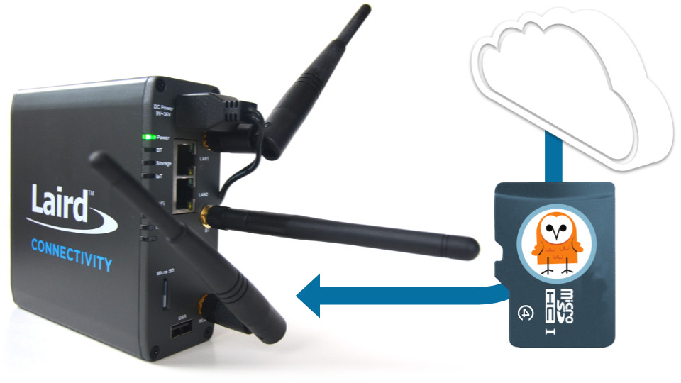

Prepare a Laird IG60 gateway from scratch
Our step-by-step guide to prepare a lean yet versatile SD card image for the IG60.
The TL;DR (Too Long; Didn't Read)
Learn how we at reelyActive prepare a SD card image for a Laird IG60 gateway.
- What will this accomplish?
- A clean installation of Laird Linux with everything to support reelyActive's open source software suite.
- Is there an easier way?
- Yes, you can simply flash a ready-made disk image to a SD card.
- So why would I read this?
- To understand the process and as a guide should you need to tweak the configuration.
Building Laird Linux Step 1 of 5
Download, configure and build Laird Linux.
- Why Laird Linux?
- It is the vendor-maintained OS which supports the IG60.
- Do I have to build it?
- No. A pre-built version can instead by used, provided it has all the prerequisites for our laird-edge software and/or any other embedded software that will run on the IG60.
Download the board support package source code Part 1
This step is not yet fully documented. If building Laird Linux from source, the official documentation can be found here.
Build the SD card image with Buildroot Part 2
This step is not yet fully documented. If building Laird Linux from source, the official documentation can be found here.
Flashing the SD card Step 2 of 5
Flash the image to a SD card using Etcher.
- Why a SD card?
- The IG60 won't boot without a valid OS on an inserted SD card!
- Why Etcher?
- It is cross-platform and user-friendly.
Prerequisites
We'll flash the SD card with Etcher, a friendly open source tool that you can download here.
Make the SD card image Part 1
This step is not yet fully documented, but can be accomplished using the mksdcard.sh script found in the root of the build image folder from the previous step.
Flash the Laird Linux image to the SD card Part 2
We recommend using micro SD cards from reputable vendors of at least 4GB size. From the computer with which you intend to flash the SD card:
- Insert the SD card (via adapter if required) and observe that it is recognised/mounted by the operating system
- Run Etcher (see Prerequisites above) by double-clicking its executable AppImage or desktop icon
- In the Etcher interface, select the image file created in Part 1
- In the Etcher interface, confirm that the SD card is automatically selected, or select manually
- In the Etcher interface, click Flash!
Within a few minutes the SD card should be flashed and verified. Unmount (if necessary) and eject the card which is now ready to find its way into the IG60.
First boot and network configuration Step 3 of 5
Boot the IG60 for the first time and SSH in to update the network configuration.
- How can the IG60 connect?
- The LAN1 port of the IG60 can connect to any network router or switch that provides a DHCP address.
- Why use SSH?
- The only way to remotely execute commands is over SSH!
The micro SD card should now be inserted into the IG60 gateway.
Boot the IG60 and determine its IP address Part 1
With the micro SD card inserted into the IG60 , complete the following:
- Connect the LAN1 port on the IG60 to a network router or switch
- Apply power to the IG60
- Determine the DHCP-assigned IP address of the IG60 (look it up in the router's DHCP client list or use a mobile app such as Fing)
Connect to the IG60 via SSH Part 2
From a computer on the same network as the IG60, open a terminal and establish a SSH connection with the command ssh root@xxx.xxx.xxx.xxx replacing the xxx with the IG60's IP address from Part 1.
When prompted, enter the root user password of the build.
Now that you're logged in to the IG60, it is possible to configure the network to simplify such connections in future.
Configure a static IP profile for LAN2 Part 3
While logged in to the IG60 via SSH, create a static IP profile called reelyStatic with the command nmcli con add con-name reelyStatic ifname eth0 type ethernet ip4 10.0.50.100/24
| Behaviour of the IG60 | Purpose | |
|---|---|---|
| LAN1 | The IG60 will accept a DHCP-assigned IP address | Use to provide wired connectivity for embedded software applications |
| LAN2 | The IG60 will use the static IP address 10.0.50.100 | Use to directly connect a computer to configure the IG60 |
Future SSH connections to the IG60 can be made by connecting directly via Ethernet to LAN2 using a static IP address such as 10.0.50.101 and with the command ssh root@10.0.50.100
Configure WiFi connections (OPTIONAL) Part 4
It is possible to create one or more WiFi connections which the IG60 will automatically establish whenever the corresponding network is in range. While logged in to the IG60 via SSH, WiFi connections can be created as follows:
Create a connection called WiNotCon to the SSID WiNot with the command:
nmcli con add con-name WiNotCon ifname wlan0 type wifi ssid "WiNot"
Activate the connection with the command nmcli con up WiNotCon
Create a connection called reelyCon to the SSID reelyActive having password owl-in-one with the commands:
nmcli con add con-name reelyCon ifname wlan0 type wifi ssid "reelyActive"
nmcli con modify id reelyCon 802-11-wireless-security.key-mgmt wpa-psk
nmcli con modify id reelyCon 802-11-wireless-security.psk "owl-in-one"
Activate the connection with the command nmcli con up reelyCon
Updating the BL654 radio firmware Step 4 of 5
If required, update the firmware of the Bluetooth Low Energy module within the IG60.
- What's the BL654?
- The BL654 is a Bluetooth Low Energy module by Laird Connectivity which resides inside some models of the IG60 gateway.
- Why update?
- The laird-edge software requires BL654 firmware that allows it to operate in observer mode and to forward the received packet stream over a serial connection.
This step is not yet fully documented.
Install and run embedded software Step 5 of 5
Install the laird-edge software and configure to run on boot.
- What's laird-edge?
- It is open source software by reelyActive which can process and forward radio decodings to a variety of targets.
- How to run on boot?
- As a systemd service, which is supported by Laird Linux.
Prerequisites
The laird-edge software requires Node.js which must be pre-built for Laird Linux (see Step 1).
An Internet connection is also required for this step.
Install laird-edge Part 1
From a terminal connected to the IG60 via SSH:
- Change to the home folder with the command
cd /home/summit - Clone the laird-edge GitHub repository with the command
git clone https://github.com/reelyactive/laird-edge.git - Change to the root of the laird-edge folder with the command
cd laird-edge - Install the package dependencies with the command
npm install
Instructions to install the serialport package will be provided in future.
Enable the laird-edge service Part 2
Configure systemd to run the laird-edge service on boot by completing the following:
- Copy the unit file to the systemd system folder with the command
cp units/laird-edge.service /lib/systemd/system - If necessary, edit the /lib/systemd/system/laird-edge.service file to correct the user name and/or file paths
- Enable the laird-edge service with the command
systemctl enable laird-edge.service - Start the laird-edge service with the command
systemctl start pi-suite.service
The IG60 will now run the laird-edge software each time it boots up.
Where to next?
Continue exploring our open architecture and all its applications.
-

Prepare a Raspberry Pi from scratch
Our step-by-step guide to prepare a lean yet versatile SD card image for the Pi. -

Prepare a reelyActive laptop from scratch
Our step-by-step guide to prepare a laptop with the minimum prerequisites for our open source software. -

diyActive Home
The home for reelyActive developers.